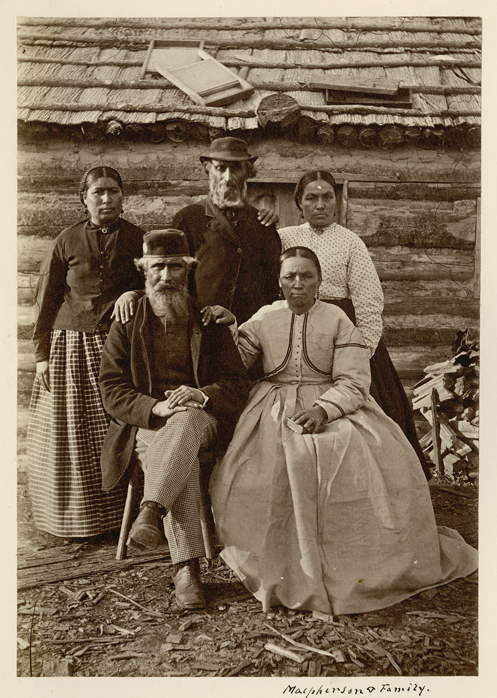

Before
In 1869, the Canadian Government began creating a road and waterway system that was planned to cut through Saulteaux territory. In order to maintain relations with the Saulteaux peoples, Robert Pither was made in charge of communication in 1870. At this time there was not yet a plan to create a treaty as the government did not deem it necessary.
In the same time period, Manitoba's Red River colony had attracted the attention of the government and they looked to establish Canadian sovereignty in that region. The military expedition they sent had to travel through the same territory. Once again an official was sent to notify the Saulteaux, this time Member of Parliament Wemyss M. Simpson joined Robert Pither, maintaining relations and ensuring troops they sent wouldn't be harmed on their journey. Wemyss M. Simpson informed the Saulteaux of the military expedition and offered to hire Saulteaux workers. The offer was refused, though the troops were promised to be unbothered, and a request was made.
10$ per man, woman, and child annually for "as long as the sun shines." Ration of pork, tea, tobacco, and flour were also requested for celebrations. The Saulteaux made it clear that though they were open to treaty negotiation, that they would not be giving up their land, they merely want compensation for its temporary use. Simpson found the requests excessive and said the government would not agree to those terms. Canada's lieutenant-governor said the annual fee would only be worth paying if they were relinquishing their rights to the whole Territory.
Late 1870, the Saulteaux said they would still be willing to negotiate a treaty but they still expected compensation for the use of their land. In 1871, the Government of Canada said they would further the treaty negotiations.
Negotiations
1871
The Government of Canada set a limit to what could be offered to the Saulteaux in exchange for rights to their land. The amount set was a maximum of 12$ annually for a family of 5, with small amounts that could be added if a family exceeded that number. This deal did not interest the Saulteaux, who sent the three comissioners assigned to negotiations right back home. The comissioners, Simpson, Dawson, and Pither, promised to return the next summer with "presents," clothing and undetermined payment.
1872
Negotiations resumed in June, and the Saulteaux were increasing demands. This may have been caused by the discovery of gold and silver on their lands, making it more valuable. It may have also been caused by Saulteaux bands in the United States of America, who had already signed a treaty with that gave them more than Canada's government was promising. The Government sent Simpson to attempt negotiation once more, this time offering 25$ annually for chiefs and 15$ for band leaders. In October, Simpson arrived at Fort William to find few of the people he was looking for, as most Saulteaux had returned to their homes after hunting season. With the lack of people he was unable to hold a general council to propose the new offers, and treaty negotiations were once again put on hold.
1873
In June 1873, a they attempted negotiating a treaty once more, this time with desperation since the Canadian Pacific Railway relied on the treaty being formed. As such, the Government of Canada decided to negotiate while matching the offer the Saulteaux bands in the United States of America received. Meaning each person was to receive, 14$ for the cession of their territory, and an annual payment of 6$-10$. The government gave the comissioners (Simpson, Dawson, and Pither) an absolute maximum of 15$ annually per person. Alexander Morris, the then lieutenant-governor of Manitoba and the Noth-West Territories, accompanied the comissioners to the North-West Angle in September. With them was a military escort, to insinuate that this was of the utmost importance. The Saulteaux delayed the meeting, even requesting a change in location, though the location change was denied.
October 1st, Governments terms as said by Alexander Morris:
I will give you lands for farms, and also reserves for your own use. … It may be a long time before the other lands are wanted, and in the meantime you will be permitted to fish and hunt over them. I will also establish schools whenever any band asks for them, so that your children may have the learning of the white man. … I will give you ten dollars per head of the population, and for every other year five dollars a-head. But to the chief men, not exceeding two to each band, we will give twenty dollars a year for ever. I will give to each of you this year a present of goods and provisions to take you home, and I am sure you will be satisfied. - Quote from The Canadian Encyclopedia
After contemplating the offer given overnight, Chief Ma-We-Do-Pe-Nais presented the Saulteaux's terms. 50$ for each chief, 20$ for each council member, and 10$ for each band, annually. Clothing, fishing tools, farming equipment, household items, food, and farm animals were also requested. It was emphasised that these were compensations for using their lands, and not a mark of ownership. Morris refused these demands, saying that his offer he gave was completely fair. Chief Ma-We-Do-Pe-Nais knew about how other Indigenous people had their land taken away from them with few benefits. As such he was defensive.
Cheif Ma-We-Do-Pe-Nais replied:
I lay before you our opinions. Our hand are poor but our heads are rich, and it is riches that we ask so that we may be able to support our families as long as the sun rises and the water runs. - Quote from The Canadian Encyclopedia
Negotiations stalled once more until Chief Sah-katch-eway of the Lac Seul and English River bands said that his people were ready to sign a treaty. This broke his ranks with other chiefs, which Morris knew and use to his advantage. He encouraged the Saulteaux to reconsider the governments offer, else he would negotiate with individual bands.
October 3rd, the negotiations resumed. A revised deal was presented that the commissioners had worked on during the break, upping the one time family payment from 10$ to 12$ and adding on funding for certain farming and hunting tools. The Saulteaux, Morris noted, seemed pleased by this, though they continued to push for more goods. They received more goods, along with excusion from conscription, permissions to hunt and fish on reserve lands, and the ability to allow American relatives in the United States to be included in the treaty if they moved back to Canada within two years of the treaty being signed. Finally, the treaty was signed after a few more short negotiations.
Treaty 3 was signed on the 3rd of October in 1873.